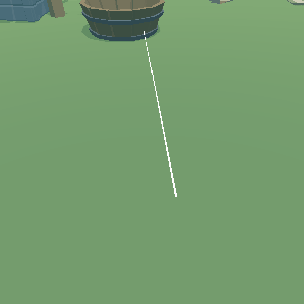
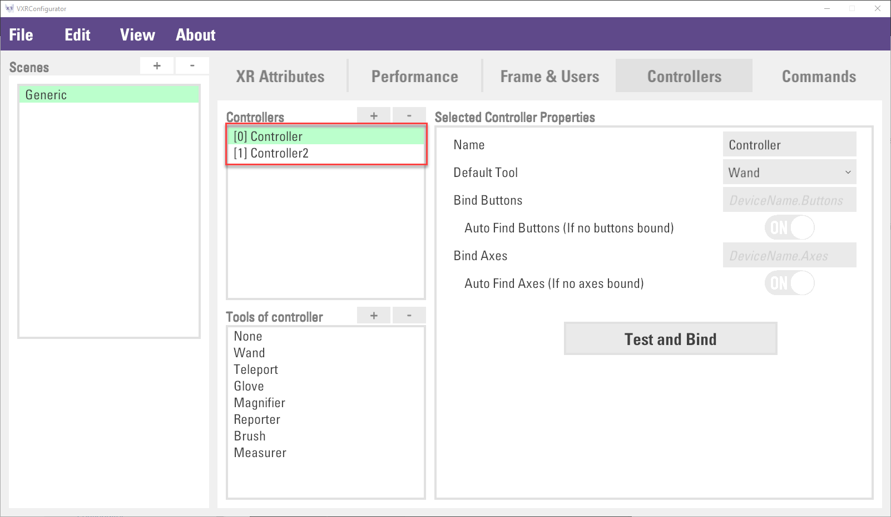
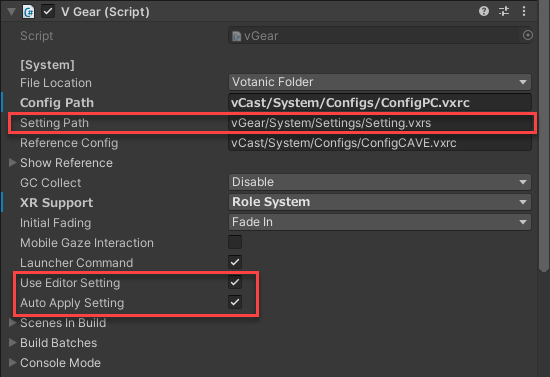

Using In-Game Tools
VotanicXR provides several in-game tools with useful features which facilitate the user exploring the VR world. This chapter introduces the features, usage, and configuration of In-Game Tools.
There are 7 in-game tools in VotanicXR, namely Wand, Teleport, Glove, Magnifier, Reporter, Brush, and Measurer.
Tutorial Scene and Related Materials
Go to Assets > Votanic > VotanicXR_Tutorial > Tutorial10_InGameTools and open the scene In Game Tool provided.
In-Game Tools Overview
As introduced in the Cross-platform Input tutorial, the in-game tools are attached to the controllers and can be configured according to the needs of the application. This section introduces briefly the seven in-game tools offered in VotanicXR.
Wand
Wand is the primary tool the user uses to interact with the VR world, such as the interactable objects and 3D UIs. Due to the heavy use of the Wand tool, it is pre-set as the Default Tool on a controller. The settings such as response colour and length of the Wand can be changed in V Gear_Wand (Script) through Unity Inspector and API. More details on how the Wand tool is used to interact with the VR world is introduced in the Interact with Virtual World tutorial.

Teleport
The Teleport tool is the default tool for user to navigate in the VR world. Detailed usage of the teleport tool is introduced in the Locomotion section for details.

Glove
Glove is similar to the Wand tool. It is used to interact with interactable objects at a shorter range, it works only with the game having [Role System] in XR Support enabled. The hand animation of the Glove can change in response to the changes in VR controllers' buttons & axes states, the animation only works with supported OpenVR devices (such as Oculus controller, Vive controller, valve index controller, Windows Mixed Reality controller etc.) through SteamVR.

Magnifier
Magnifier is a tool to zoom in/out a portion of the VR world for viewing. Details such as the camera angle and zoom level can be changed in V Gear_Magnifier (Script).
Reporter
Reporter is a tool to capture the VR world as a screenshot and add remarks about the screenshot. A Camera View Finder Window will show up when the Reporter tools is activated. Users can press the Trigger button to take a screenshot of the VR world.
Users can then add remark about the captured screenshot by clicking the photo using the Wand
All screenshots and its related remarks can be exported to a HTML file. Users can hold the trigger button for one second to open the export dialog for saving the HTML file.
Brush
Brush is a tool to paint in the VR world. When the Brush tool is activated, user can hold the Trigger button to draw. The Brush tool can be customised in several ways from the V Gear_Magnifier (Script) or from the brush tool's in-game tool UI.

The drawing can be removed by selecting the drawing and pressing the Trigger button using the Wand. Besides, all drawing can be cleared by selecting a drawing and holding the Trigger button for 1 second.
The brush properties such as colour, tip size can be changed via the brush property panel.

By default, the drawings are interactable objects in which user can grab it using the Wand and use it to perform other interactions. Optionally, user can open the Advanced Setting menu and configure physics setting for the brush ink.

Measurer
Measurer is a tool to conduct in-game measurement in the VR world. To start measurement, user first mark a starting point in the VR world and press the Trigger button once. The measurement points can be grabbed and dragged around by selecting the point and holding the Grab button.

The measurement can be removed by clicking Trigger button while having the Wand pointing to the line. User can hold the Trigger button for 1 second to clear all measurement.
The measurement has a Continuity property, which allows the measurement tool to take a series of measures when turned on. When using the measurement tool, press and hold the Trigger button when marking the measurement point to toggle the Continuity property.
This Continuity can be changed via command, inspector, or API.
| Continuity Off | Continuity On |
|---|---|
 |
Basic usage of In-Game Tools
VotanicXR in-game tools can be opened via two methods, one is opening from in-game menu, another one is invoking from API.
Open In-Game Tool using In-Game Menu
Open the in-game menu, then choose Tool to enter its sub menu, and you can select the in-game tool from the menu to use.

Open In-Game Tools From API
The in-game tools can be changed via vGear.controller.SetTool(ToolName) API. the name for each tool is shown in the below table.
| Tool Name |
|---|
| Wand |
| Teleport |
| Glove |
| Magnifier |
| Reporter |
| Brush |
| Measurer |
The below code shows an example to use the SetTool method
void Update(){
// Set the tool into Brush when Grab is received
if (vGear.Cmd.Received("Grab"))
{
vGear.controller.SetTool("Brush");
}
}
Configuring In-Game Tools
This section introduces the configuration of in-game tools. The in-game tools setting can be configurated in the Unity inspector, VotanicXR Configurator, and API. Developer can refer to the API for more details.
Configuration via Unity Inspector
In VotanicXR, in-game tools are part of the virtual controller and all in-game tools settings are attached to the virtual controller. In the below figure, the highlighted Controller GameObject represent one virtual controller in VotanicXR. The details about virtual controllers are introduced in Getting Cross-platform Input section.
The in-game tools settings can be changed in V Gear_Controller(Script) script which can be accessed via vGear > Frame > Controller GameObject. The Default Tool is the tool be used for the selected Controller when the game starts.
For example, the application has two virtual controllers (Controller and Controller2) defined for the left and the right hand. We need to duplicate the Controller GameObject and name it as Controller2. Then, in the setting.vxrs file (which can be opened via the VotanicXR Configurator), the virtual controller name should be also named as Controller and Controller2.

As shown in the below figure, for each tool there are 10 properties that can be configurated.
The below table has a brief explanation about the setting.
| Property Name | Description |
|---|---|
| Name | Name of the tool |
| Auto Switch | If enable, the system is allowed to auto switch out of the current tool, if other tools fulfil the Scan conditions. This property usually uses together with the Enable Scan property. |
| Enable Scan | If enabled, it allows auto scan and switch to this tool. This property is required to use with the Detect Layers property for the detection. |
| Scan Length | Raycast length of the tool |
| Detect Layers | This is an array list of layer index, which is used for whitelisting objects for detection. This property uses together with enable scan and interaction property. |
| Ignore Layers | A ignore layer list. The GameObject in the layer in this list will be ignored for auto switching tool and interaction. |
| Position | The position offset of the tool |
| Rotation | The rotation offset of the tool |
| Wand Ray | Enable to display a wand together with the tool. This section includes the basic setting of the Wand property, for example, interaction and wand length. |
| Glove | Enable to display a glove together with the tool. . This section includes the basic setting of the Glove property, for example, interaction. |
In addition, there are some special tool-related properties in each tool's GameObject for fine tuning. However, if a setting appears in BOTH Controller and tool prefab, the Controller setting will overwrite the tool prefab setting.
Configuration via VotanicXR Configurator
By default, the in-game tools' setting in Unity Editor will be exported and saved to the application setting setting.vxrs file when building the application. The path is configured in Setting Path property. If you would like to stop the Unity Editor setting to be saved in the application setting file, unchecked the Auto Apply Setting in vGear inspector window.
Besides, by default, if the scene is played in the Unity Editor, settings defined in the inspector will be used rather than the setting.vxrs file. If you would like to test the configurations defined in the application setting file while running the scene in Unity Editor, it is required to uncheck the Use Editor Setting property.

The setting.vxrs file can be configurated by using the VotanicXR Configurator. In the Configurator, select Controllers tab, then select the tool in Tools of controller list for configuration. The settings inside are the same as in Unity editor's inspector window. Please check the previous section for details of the properties to configure.